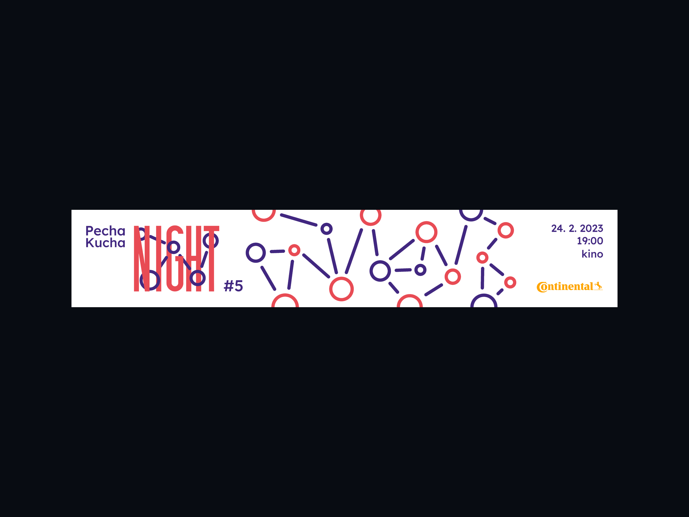
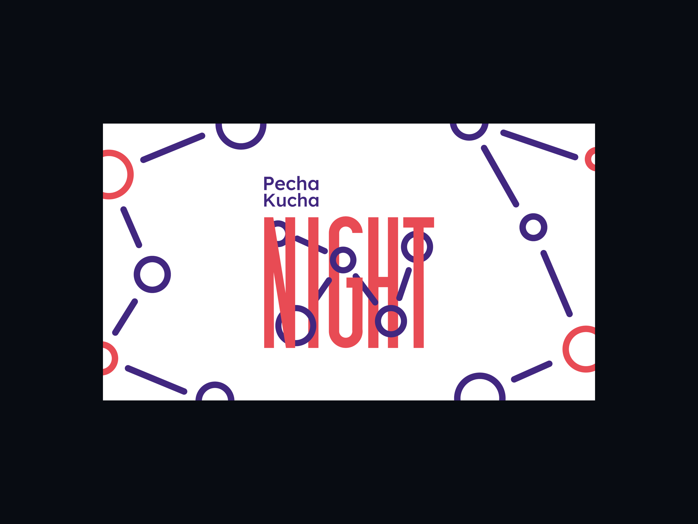
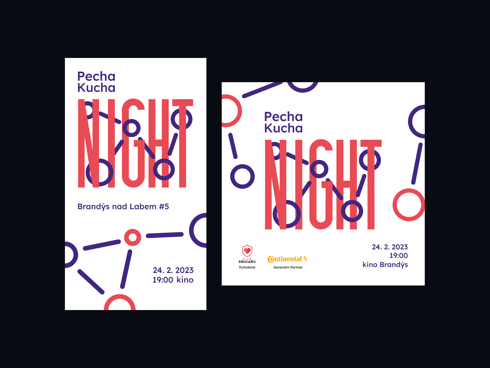
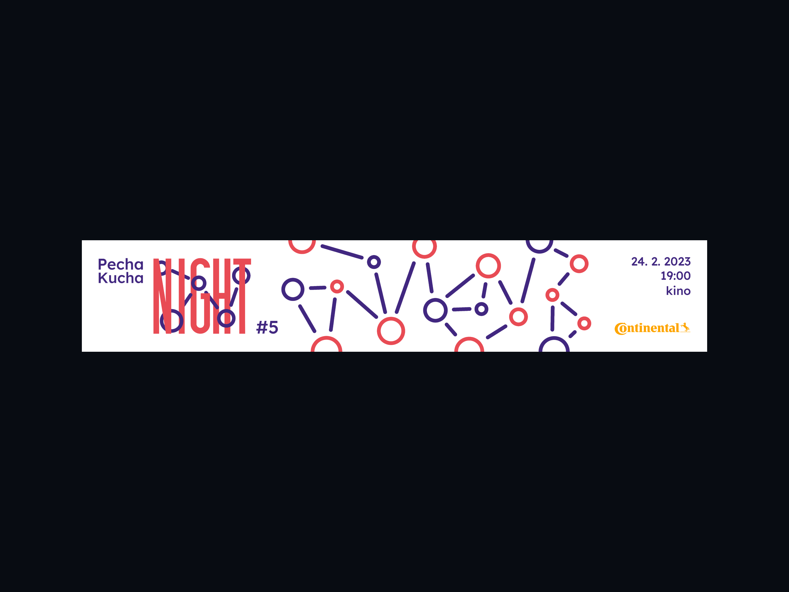
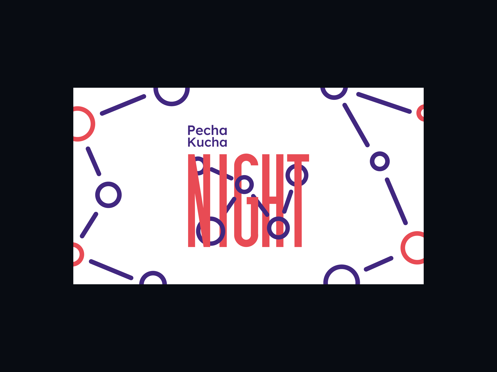
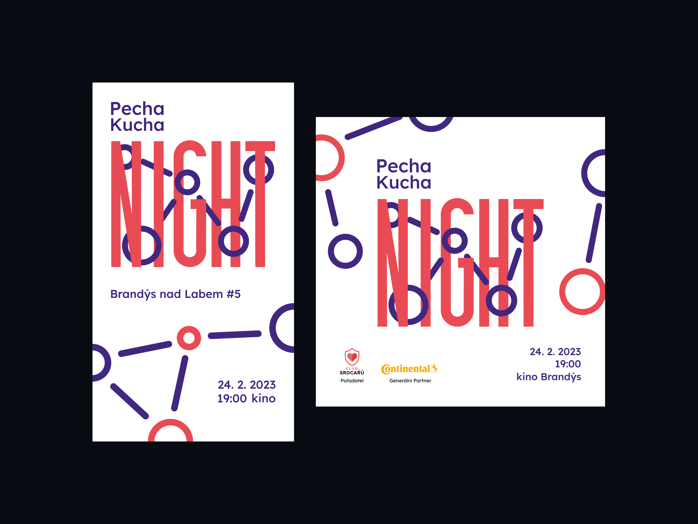

Příprava
— 01
— Cílovou skupinou na této akci jsou všechny věkové kategorie. Proto se zvolily znaky jak hravosti, tak i formálního typu. Pecha Kucha Night je specifická svým formátem 20x20. Na pódiu brandýského kina vystoupí během večera 8-10 inspirativních řečníků. Každý řečník má k dispozici 20 slajdů a na každý slajd 20 sekund. Díky tomu je celý večer velmi svěží a řečníci se na pódiu plynule střídají. Proto se přidávají do brand strategie i znaky, které charakterizují skupiny lidí a propojení.
— Vizuální identita by měla být zároveň důležitá, ale i hravá. Proto jsem se rozhodl kombinovat typografii, která se bude společně s ilustracemi doplňovat.
Tvorba vizuální identity
— 02
— Brand strategii máme definovanou. Dostáváme se do hlavní části navrhování vizuální identity. Vizuální identita se skládá z typografie, která informuje o názvu akce(Pecha Kucha Night). Do logotypu jsem zvolil klasický a čistý font, který jsem u posledního slova akce(NIGHT) roztáhl, abych definoval znak hravosti.
— Mezi písmena klíčového slova jsem umístil ilustrace. Ilustrace se skládají ze dvou tvarů(kruh a linka). Spojení dohromady symbolizuje, že lidi na tomto eventu se propojují a vzniká určitá skupina lidí, která mezi sebou sdílí své zkušenosti.
Finalní náhled
— 03
 




